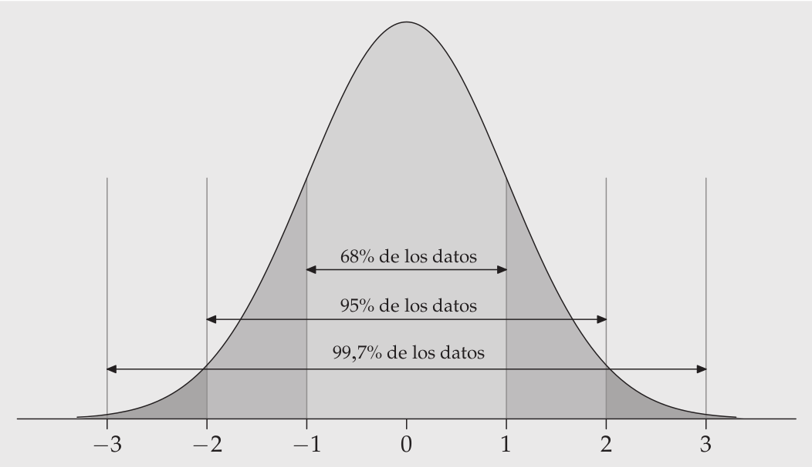
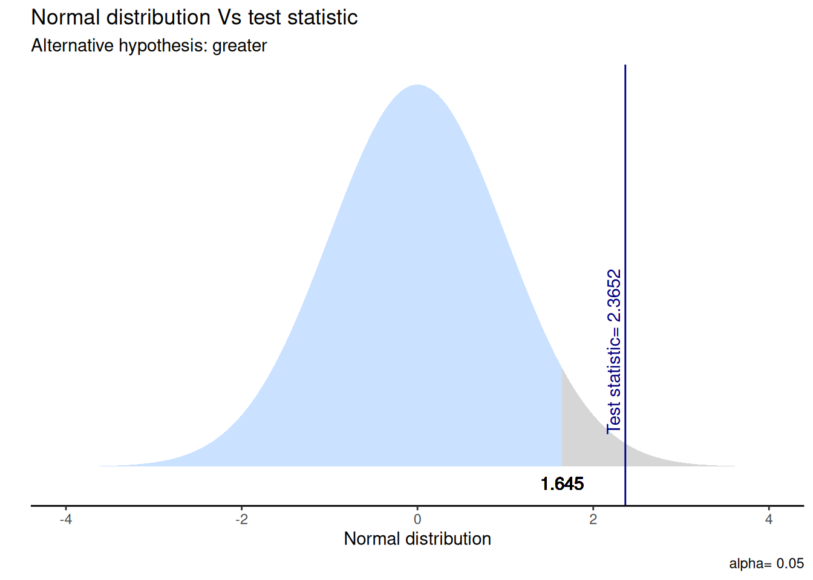

library(pacman)
pacman::p_load(tidyverse, # para sintaxis
ggplot2,
rempsyc, # Reporte
kableExtra, # Tablas
broom,
Publish) # Varios
options(scipen = 999) # para desactivar notacion cientifica
rm(list = ls()) # para limpar el entonrno de trabajoRepaso inferencia estadística
Correspondiente a la sesión del jueves, 13 de marzo de 2025
Objetivo de la práctica
El objetivo de esta guía práctica es repasar contenidos de inferencia estadística, revisando los conceptos y aplicaciones de distribución normal, cálculo de intervalos de confianza y test de hipótesis.
En detalle, aprenderemos y recordaremos:
- Qué es la distribución normal
- Cómo calcular e interpretar intervalos de confianza
- Test de hipótesis
Librerías
Cargaremos algunas librerías que serán necesarias en las diferentes partes de esta guía práctica:
1. Distribución Normal
1.1. Curvas de distribución
Por distribución nos referimos al conjunto de todos los valores posibles de una variable y las frecuencias (o probabilidades) con las que se producen.
Existen distribuciones empíricas y distribuciones teóricas, en donde:
- las primeras reflejan la distribución de los valores que asume la variable en un grupo concreto a partir de una observación.
- las segundas son una función matématica que expresan la distribución de un conjunto de números mediante su probabilidad de ocurencia.
Estas últimas son también llamadas curvas de distribución.
1.2. Distribución Normal
Es una distribución teórica que corresponde a una curva que representa la distribución de los casos de la población en torno al promedio y con una varianza conocida.
- Simétricas y con un solo punto de elevación
- La pendiente es más fuerte cerca del centro, y se suaviza hacia los extremos
- Coinciden al centro el promedio, la mediana y la moda
- La desviación estandar expresa su dispersión.
- Establece áreas o proporciones bajo la curva en base a desviaciones estándar del promedio.
1.3. Distribución Normal Estándar
La distribución normal estándar es una distribución normal con una media de 0 y una desviación estándar de 1.

2. Intervalos de confianza
Un intervalo de confianza es un rango dentro del cual es probable que se encuentre un parámetro poblacional con un nivel de confianza específico. Además, proporciona información sobre la precisión de nuestras estimaciones.
Retomando la sesión 4 de estadística correlacional: el promedio de la muestra \(\bar{x}\) se distribuye de manera normal, con un error estándar \(SE\), lo que nos permite estimar probabilidades basándonos en la curva normal.
Por ejemplo, si nos desviamos \(\pm1.96SE\) desde la media abarcaremos aproximadamente el 95% de los valores probables.

Nota
Nivel de confianza: Corresponde a la probabilidad de que la muestra elegida produzca un intervalo que incluya el parámetro que se está estimando (\(1-\alpha\)).
Nivel de significancia: Corresponde a la probabilidad de que el intervalo calculado a partir de la muestra no comprenda el parámetro de la población (\(\alpha\)).
2.1. Cálculo de intervalos de confianza
Generemos un vector aleatorio para estimar un intervalo de confianza para la media, el que se puede calcular de la siguiente manera:
set.seed(123) # Fijar la semilla para reproducibilidad
vector <- rnorm(100, mean = 5, sd = 2)
media <- mean(vector)
desv_estandar <- sd(vector)
cat("Media:", media, "\n")Media: 5.180812 cat("Desviación Estándar:", desv_estandar, "\n")Desviación Estándar: 1.825632 # Calcular un intervalo de confianza para la media
intervalo_confianza <- t.test(vector)$conf.int # Intervalo de confianza del 95% para la media
intervalo_confianza[1] 4.818567 5.543057
attr(,"conf.level")
[1] 0.95También podemos calcular intervalos de confianza para casos reales. Carguemos la base de datos que utilizaremos, que corresponde a un subset de Chile de la International Social Survey Program ISSP del 2009:
load(url("https://github.com/cursos-metodos-facso/datos-ejemplos/raw/main/issp_2009_chile.RData"))
Nota
Recordemos que podemos contar con bases de datos que tengan factor de expansión (ponderador) o no. Esta distinción se presenta cuando trabajamos con muestras simples o complejas. Al trabajar con muestras complejas debemos identificar cuál es la variable del ponderador e incorporarla en nuestro cálculo.
En este momento trabajaremos sin factores de expansión o ponderadores.
IC para Medias
Calculemos un intervalo de confianza para la media de edad:
psych::describe(issp$age) vars n mean sd median trimmed mad min max range skew kurtosis se
X1 1 1505 46.56 17.64 45 45.82 19.27 18 91 73 0.32 -0.76 0.45Publish::ci.mean(issp$age, alpha = 0.05) mean CI-95%
46.56 [45.67;47.45]Contamos con una media de edad de 46,56 años como estimación puntual. Pero también podemos decir que con un 95% de confianza el parámetro poblacional se encontrará entre 45,67 y 47,45 años.
3. Inferencia estadística
En esta sección, se abordan pruebas de hipótesis para diferencias de medias y direccionales utilizando la prueba t
Esta sección tiene 3 ejercicios. El primero de ellos es un ejemplo, y los ejercicios 2 y 3 se desarrollan de manera autónoma en la sala (también puede ser en grupo).
Cinco pasos para la inferencia estadística
En inferencia, las pruebas de hipótesis nos ayudan a determinar si el resultado que obtenemos en nuestra muestra es un efecto real/extensible a la población o un error. Aquí recomendamos una lista de cinco pasos lógicos para enfrentarnos a la inferencia estadística:
| Paso | Detalle |
|---|---|
| 1 | Formula \(H_0\) y \(H_A\) y estipula la dirección de la prueba |
| 2 | Calcula el error estándar (SE) y el valor estimado de la prueba (ej: Z o t) |
| 3 | Especifica la probabilidad de error \(\alpha\) y el valor crítico de la prueba |
| 4 | Contrasta el valor estimado con el valor crítico |
| 5 | Intrepreta los resultados |
Además de estos 5 pasos también existe la posibilidad de calcular un intervalo de confianza, que acompañe la precisión de nuestra estimación.
Tip
Los # en el código
En este código y siguientes aparecen varios #, que son una función de comentarios en R. No son necesarios para que el código funcione, pero son útiles en este caso para poder explicar que función cumple cada sección del código. Todo lo que aparece a la derecha de un # no es leído por el programa.
Exploremos la base de datos issp 2009.
names(issp) # Nombre de columnas [1] "sex" "age" "educyrs" "income"
[5] "topbot" "pref_redis" "perc_ineq" "conflict_rp"
[9] "conflict_wcmc" "conflict_mw" "conflict_tb" dim(issp) # Dimensiones[1] 1505 11Contamos con 11 variables (columnas) y 1.505 observaciones (filas).
Recordemos…
En estadística, la formulación de hipótesis que implica dos variables (o la comparación de grupos) busca determinar si existen diferencias en una variable entre grupos y, de ser el caso, evaluar si esta diferencia es estadísticamente significativa.
Hasta ahora, en estadística correlacional hemos aprendido a contrastar hipótesis sobre diferencias entre grupos. A esto también se le llama hipótesis de dos colas.
Prueba de dos colas
Contrastamos la hipótesis nula (o de trabajo) de no diferencias entre grupos: \[ H_{0}: \mu_{1} - \mu_{2} = 0 \] En relación a una hipótesis alternativa sobre diferencias entre grupos: \[ H_{A}: \mu_{1} - \mu_{2} \neq 0 \]
Además, podemos plantear hipótesis respecto a que el valor de cierto parámetro para un grupo puede ser mayor o menor al de otro grupo. A esto se le conoce como hipótesis de una cola.
Prueba de una cola
\[ H_{0}: \mu_{0} ≥ \mu_{1} ; \mu_{0} ≤ \mu_{1}\]
\[ H_{A}: \mu_{0} > \mu_{1} \]
\[ H_{A}: \mu_{0} < \mu_{1} \]
Veamos ahora cómo aplicar todos estos conocimientos con ejercicios.
Ejercicio 1
Este ejercicio está desarrollado para que sirva de ejemplo a los siguientes ejercicios que deben ser desarrollados de manera autónoma.
La pregunta de investigación es: ¿Es el nivel escolar de los hombres mayor que el de las mujeres?
Para contrastar esta hipótesis, vamos utilizar la bbdd issp y seleccionaremos las variables sex e educyrs, que representa el nivel educacional medido en cantidad de años de educación.
issp_subset <- issp %>%
select(sex, educyrs) # seleccionamos
issp_subset <- na.omit(issp_subset) # eliminamos casos perdidos (listwise)Generamos tabla para visualizar la distribución de los datos.
issp_subset %>%
dplyr::group_by(sex) %>% # se agrupan por la variable categórica
dplyr::summarise(Obs. = n(),
Promedio = mean(educyrs, na.rm=TRUE),
SD = sd(educyrs, na.rm=TRUE)) %>% # se agregan las operaciones a presentar en la tabla
kableExtra::kable(format = "markdown") # se genera la tabla| sex | Obs. | Promedio | SD |
|---|---|---|---|
| 1 | 604 | 11.08940 | 4.532026 |
| 2 | 847 | 10.53011 | 4.308025 |
Ahora vamos con los 5 pasos de la inferencia
1. Formulación de hipótesis
El primer aspecto a establecer es el tipo de hipótesis a formular: ¿Direccional o no direccional? En este caso, la pregunta indica una direccionalidad (“mayor que”), por lo tanto corresponde a una hipótesis direccional. Si hubiera sido una pregunta que hiciera referencia simplemente a diferencias (“¿Es el nivel educacional de los hombres distinto al de las mujeres?”) correspondería a una hipótesis no direccional.
La hipótesis general es que el nivel educacional de los hombres es mayor que el de las mujeres. Pasando a lenguaje de hipótesis, esto se plantea como:
Hipótesis alternativa:
- \(H_A\): Promedio educación hombres ( \(\bar{X}_{hombres}\)) - Promedio educación de mujeres ( \(\bar{X}_{mujeres}\)) > 0
Hipótesis nula:
- \(H_0\): \(\bar{X}_{hombres} - \bar{X}_{mujeres} \leq 0\)
Pasos 2, 3 y 4 de una vez con R
En clases vimos que los pasos 2, 3 y 4 corresponden a:
Obtener error estándar y estadístico de prueba empírica correspondiente (ej: Z o t)
Establecer la probabilidad de error \(\alpha\) (usualmente 0.05) y obtener valor crítico (teórico) de la prueba correspondiente
Cálculo de intervalo de confianza / contraste valores empírico/crítico
Esta secuencia de pasos tiene un sentido pedagógico para poder entender cómo finalmente se llega a interpretar el contraste de hipótesis en el paso 5. Pero en análisis de datos, luego de establecer las hipótesis nos vamos directamente al software que nos permite obtener de una vez toda la información de los pasos 2, 3 y 4.
test_ej1 <- t.test(issp_subset$educyrs ~ issp_subset$sex,
alternative = "greater",
conf.level = 0.95)
test_ej1
Welch Two Sample t-test
data: issp_subset$educyrs by issp_subset$sex
t = 2.3652, df = 1258.1, p-value = 0.009085
alternative hypothesis: true difference in means between group 1 and group 2 is greater than 0
95 percent confidence interval:
0.1700565 Inf
sample estimates:
mean in group 1 mean in group 2
11.08940 10.53011 También podemos visualizarlo en una tabla más amable.
library(flextable)Warning: package 'flextable' was built under R version 4.4.1
Attaching package: 'flextable'The following objects are masked from 'package:kableExtra':
as_image, footnoteThe following object is masked from 'package:purrr':
composelibrary(rempsyc)
stats.table <- tidy(test_ej1, conf_int = T)
nice_table(stats.table, broom = "t.test")Method | Alternative | Mean 1 | Mean 2 | M1 - M2 | t | df | p | 95% CI |
|---|---|---|---|---|---|---|---|---|
Welch Two Sample t-test | greater | 11.09 | 10.53 | 0.56 | 2.37 | 1,258.13 | .009** | [0.17, Inf] |
Visualicemos la distribución de esta prueba y su zona de rechazo.
gginference::ggttest(test_ej1)Warning in geom_text(aes(x = ub, y = -0.02), label = round(ub, 3), vjust = 0.3): All aesthetics have length 1, but the data has 10000 rows.
ℹ Please consider using `annotate()` or provide this layer with data containing
a single row.
5. Interpretación
La prueba T que evalúa la diferencia de medias entre la cantidad de años de educación y el sexo sugiere que el efecto es positivo y estadísticamente signficativo (diferencia = 0,56, t = 2,37, p < .05). El valor \(p\) indica que la probabilidad de observar una diferencia de esta magnitud, o mayor, bajo la suposición de \(H_{0}\) es menor al 5%. Por tanto, con un 95% de confianza, rechazamos la \(H_{0}\) ya que existe evidencia a favor de nuestra \(H_{A}\) respecto a que la cantidad de años de educación de los hombres es mayor a la cantidad de años de educación de las mujeres.
Ejercicio 2
En este ejercicio evaluaremos la siguiente pregunta: ¿Es el estatus social subjetivo de las mujeres en edad de jubilación menor al estatus social subjetivo de las mujeres que aún no llegan a esta edad? Por ende, usaremos prueba \(t\) para diferencia de medias.
Utilice la bbdd issp y seleccione las variables sex, age y topbot (estatus social subjetivo). Luego, filtra por sexo == 2 para quedarse solo con mujeres y genera una nueva variable jubilada que agrupe en “No” a las menores de 60 años y en “Si” a las mayores de 60 años. Luego, elimina los casos pérdidos con na.omit().
Genere una tabla de descriptivos de el estatus social subjetivo (topbot) según si las observaciones están o no en edad de jubilación (topbot). Presente cantidad de observaciones por categoría, media y desviación estándar.
Una ayuda con el procesamiento (solo esta vez)…
issp_jub <- issp %>% dplyr::select(sex, age, topbot) %>%
dplyr::filter(sex==2) %>%
mutate(jubilada = case_when(age<60~"No",
age>=60~"Si")) %>%
na.omit()
issp_jub %>%
dplyr::group_by(jubilada) %>%
dplyr::summarise(Obs. = n(),
Media = mean(topbot, na.rm = T),
DS = sd(topbot, na.rm = T)) %>%
kableExtra::kable(format = "markdown") # hacemos la tabla| jubilada | Obs. | Media | DS |
|---|---|---|---|
| No | 653 | 4.105666 | 1.608885 |
| Si | 214 | 3.738318 | 1.727091 |
Ahora vamos con los 5 pasos de la inferencia
1. Formulación de hipótesis
El primer paso es traducir nuestra pregunta a una hipótesis estadística contrastable. Para ello: a) elija el tipo de hipótesis a plantear ¿direccional o no direccional? y b) especifique la hipótesis nula (\(H_0\)) e hipótesis alternativa (\(H_A\)).
Pasos 2, 3 y 4 de una vez con R
Siguiendo el ejemplo del Ejercicio 1, utilice el software para generar los estadísticos correspondientes. Contraste sus hipótesis considerando un 95% de confianza.
5. Interpretación
Interprete los resultados obtenidos: ¿es posible rechazar la hipótesis planteada?
La prueba T que evalúa la diferencia de medias…
Ejercicio 3
En este ejercicio tomamos de ejemplo una pregunta clásica en ciencias sociales: ¿el ingreso de las personas está relacionado a su nivel educacional?. Para responder esta pregunta vamos a usar una prueba \(t\) de contraste de medias para dos muestras independientes.
Esta vez les dejaremos el procesamiento a ustedes. Utilice la bbdd issp y seleccione las variables income (ingreso en deciles) y educyrs y elimine los datos perdidos. Luego, considerando educación media como 13 años, genere una nueva variable educacion que agrupe 13 años o menos en “media o menos” y otro como “educación superior” que agrupe a quienes han estudiado más de 13 años. Luego, genere una tabla de descriptivos de los ingresos en deciles (income) según si las personas cuentan con educación universitaria o no (educacion). Presente cantidad de observaciones por categoría, media y desviación estándar.
1. Formulación de hipótesis
El primer paso es traducir nuestra pregunta a una hipótesis estadística contrastable. Para ello: a) elija el tipo de hipótesis a plantear ¿direccional o no direccional? y b) especifique la hipótesis nula (\(H_0\)) e hipótesis alternativa (\(H_A\)).
Pasos 2, 3 y 4 de una vez con R
Siguiendo el ejemplo del Ejercicio 1, utilice el software para generar los estadísticos correspondientes. Contraste sus hipótesis considerando un 95% de confianza y un 99% de confianza. Comente las diferencias en el paso 5.
5. Interpretación
Interprete los resultados obtenidos: ¿es posible rechazar la hipótesis nula? ¿a raíz de qué información llega a la conclusión? ¿qué diferencia observa al aplicar la prueba con ambos niveles de confianza (95% y 99%)?
Resumen
Hoy pudimos aprender y recordar:
- Qué es la distribución normal
- Cómo calcular e interpretar intervalos de confianza
- Cómo calcular e interpretar test de hipótesis